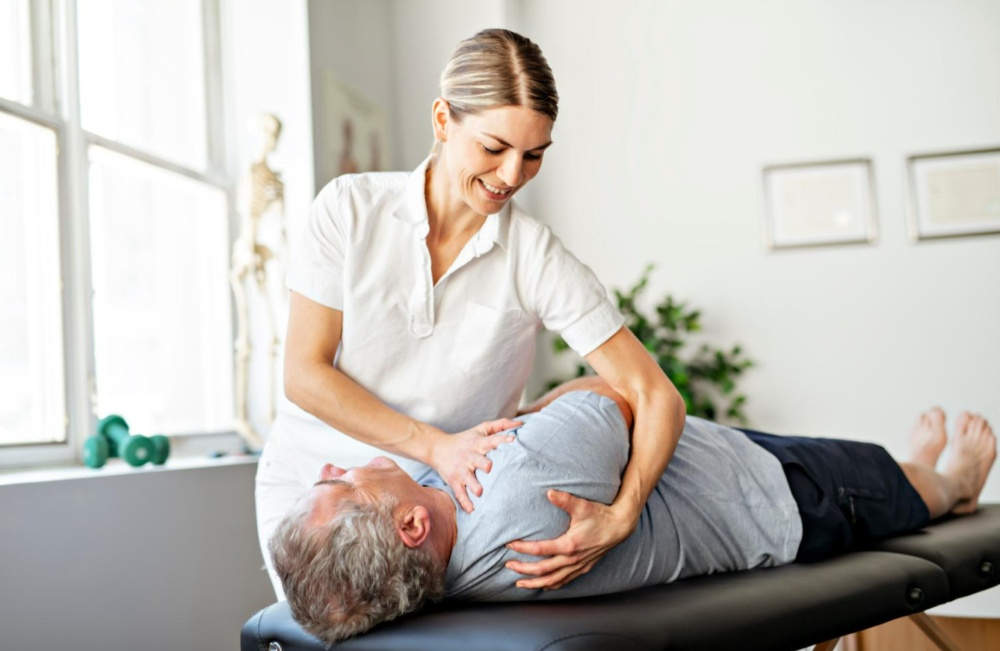
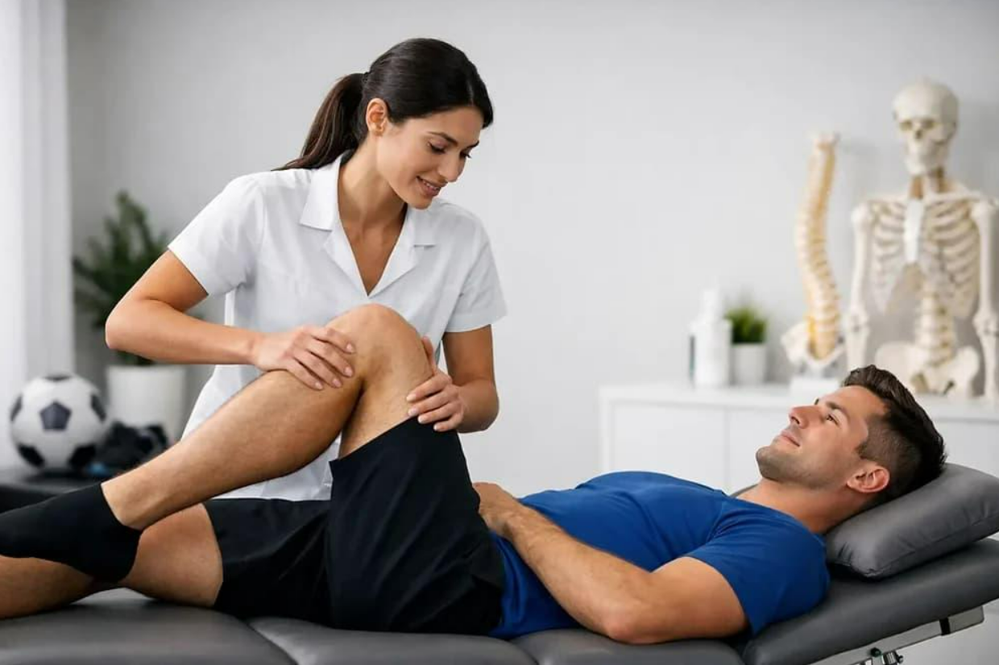
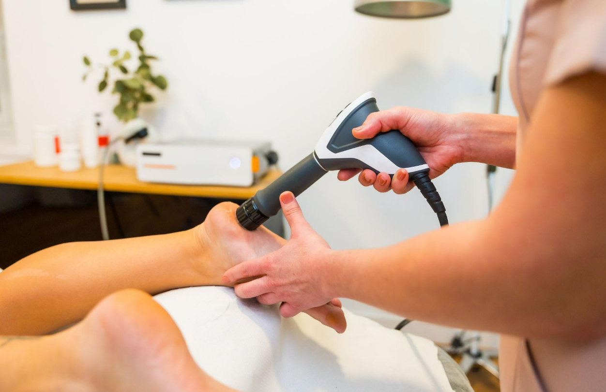
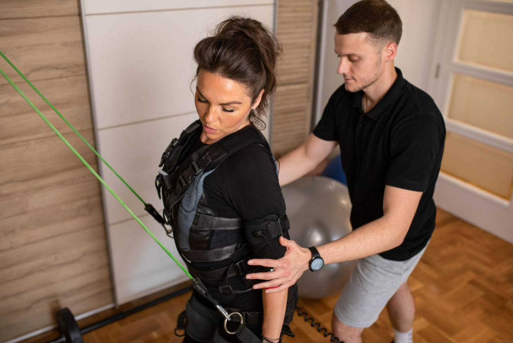
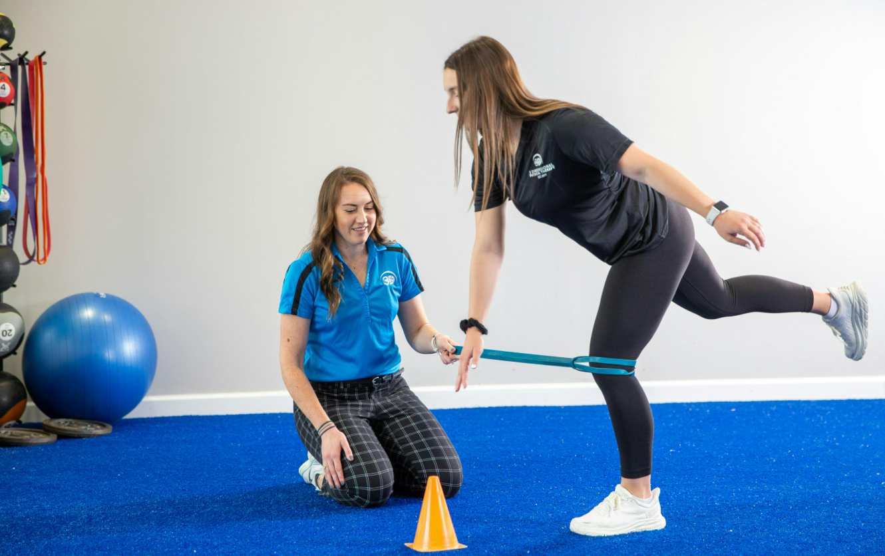
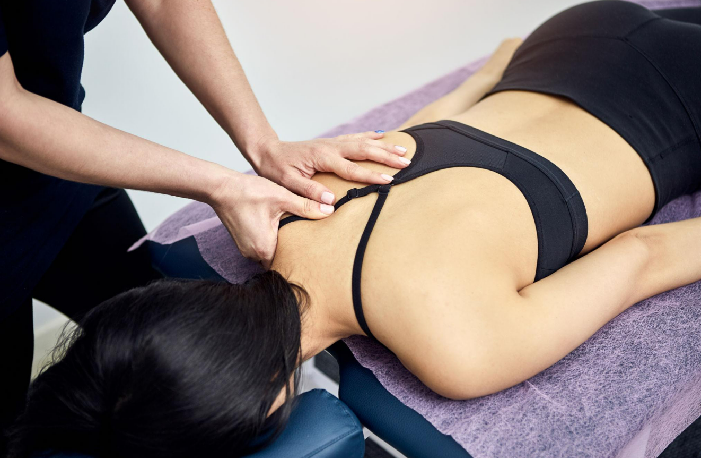
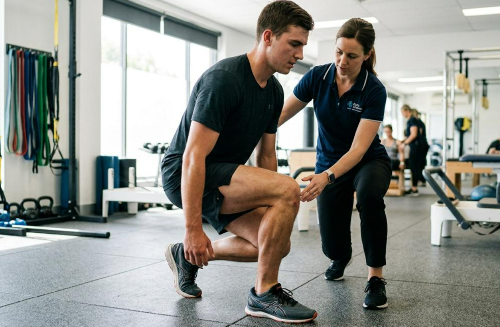
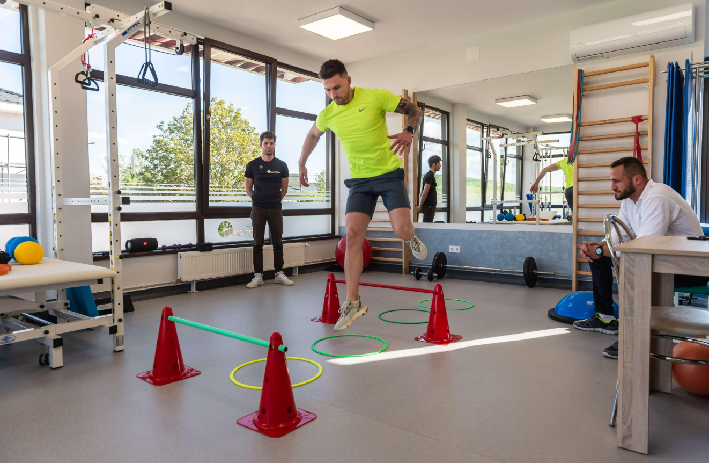

Our Services.
Personalized physiotherapy and rehabilitation designed to restore movement, rebuild strength, and support your recovery. From football-related injuries and sports performance to everyday physical conditions, we help you move forward with confidence.
Services & Specialties
From football-related injuries and sports rehabilitation to musculoskeletal conditions and post-surgical recovery, PhysioCare Clinic provides personalized physiotherapy services designed around your individual needs. Our approach focuses on restoring movement, rebuilding strength, reducing discomfort, and helping patients return to their daily activities and sporting goals with confidence.
Musculoskeletal Physiotherapy.
علاج فيزيائي للعضلات والمفاصل
STOP MANAGING PAIN. START ELIMINATING IT.
Musculoskeletal pain can affect your movement, daily activities, and overall quality of life. At PhysioCare Clinic, we focus on identifying the underlying causes of discomfort and developing personalized rehabilitation programs to help restore mobility, improve strength, and support long-term recovery.
Whether your condition is related to a sports injury, poor posture, physical strain, or post-surgical recovery, our approach combines individualized assessment, therapeutic exercises, and appropriate physiotherapy techniques to help you move with greater comfort and confidence.
Conditions We Treat
- Back & Neck Pain
- Joint Pain (Shoulder, Knee, Hip, Ankle)
- Sciatica & Disc-Related Conditions
- Postural Problems & Muscle Imbalances
- Sports & Musculoskeletal Injuries
- Post-Surgical Rehabilitation
- Injuries from Falls, Trauma & Accidents
Our Treatment Approach
Every rehabilitation program is adapted to your condition, recovery progress, and personal goals. Treatment may include manual therapy, therapeutic exercises, mobility training, strengthening programs, and education to help you manage symptoms and improve physical function.


Sports Injuries Rehabilitation.
إعادة تأهيل الإصابات الرياضية
RECOVER FAST. RETURN STRONGER.
Sports injuries can affect more than physical performance. They can interrupt training, competition, daily activities, and confidence in movement. At PhysioCare Clinic, our sports rehabilitation approach focuses on helping athletes recover safely, rebuild strength, and regain the physical abilities needed for their sport.
With a particular focus on football-related injuries, we provide individualized rehabilitation programs for players and active individuals recovering from ligament injuries, muscle strains, joint problems, and sports-related surgical procedures. Our goal is to support a progressive, confident return to physical activity while reducing the risk of reinjury.
Sports Conditions We Treat
- Sprains & Strains — Ankle, knee, and wrist injuries
- Ligament Injuries — ACL, MCL, and PCL rehabilitation
- Tendon Injuries — Achilles, patellar, and rotator cuff
- Muscle Tears — Hamstring, quadriceps, and calf
- Joint Dislocations — Shoulder and other joint injuries
- Post-Surgical Sports Recovery — Arthroscopy and ligament repair
- Overuse Injuries — Runner's knee, shin splints, and tendinopathy
Our Rehabilitation Approach
Sports rehabilitation follows a structured, progressive approach adapted to the athlete's injury, physical condition, and recovery goals. Treatment may include pain management, restoration of joint mobility, muscle strengthening, balance and coordination exercises, and sport-specific conditioning.
For football players, rehabilitation may incorporate running progression, agility exercises, directional changes, and functional movement training. Return-to-play decisions are guided by recovery progress, physical readiness, and appropriate functional assessments.
Why Choose PhysioCare for Sports Rehabilitation?
At PhysioCare Clinic, we recognize that recovering from a sports injury is not simply about relieving pain. It is about restoring movement, rebuilding confidence, and preparing the body for the physical demands of sport.
Our personalized rehabilitation approach focuses on each athlete's needs, helping football players and active individuals work toward a safe and sustainable return to their activities.
Shockwave Therapy.
العلاج بالموجات التصادمية
ADVANCED HEALING. PROVEN RESULTS.
Extracorporeal Shockwave Therapy (ESWT) is a non-invasive treatment that uses acoustic pressure waves to help manage certain musculoskeletal conditions. It is commonly used for persistent tendon-related pain and selected soft-tissue disorders.
At PhysioCare Clinic, our approach focuses on evaluating each patient's condition and determining whether shockwave therapy may be an appropriate part of a personalized rehabilitation program.
What Is Shockwave Therapy?
Shockwave therapy delivers controlled acoustic waves to targeted areas of the body. These waves create mechanical stimulation that may influence tissue healing processes and help reduce pain in certain conditions.
It is performed without surgical incisions and may be combined with therapeutic exercises, strengthening programs, and other physiotherapy techniques depending on the patient's needs.
Conditions Treated with Shockwave
- Achilles Tendinopathy — Persistent pain around the Achilles tendon
- Plantar Fasciitis — Chronic heel and plantar fascia pain
- Calcific Shoulder Tendinopathy — Calcium deposits affecting shoulder tendons
- Tennis Elbow — Lateral elbow tendinopathy
- Golfer's Elbow — Medial elbow tendinopathy
- Patellar Tendinopathy — Persistent tendon pain around the knee
- Selected Myofascial Conditions — Muscle-related pain and trigger points
How Does Shockwave Therapy Work?
During treatment, a handheld applicator delivers acoustic pulses to the affected area. The intensity and number of pulses are adjusted according to the treatment protocol, the condition being addressed, and the patient's tolerance.
The number of sessions varies depending on the diagnosis, symptom duration, and response to treatment. Progress is monitored to determine whether additional sessions or complementary rehabilitation exercises are appropriate.
Is Shockwave Therapy Painful?
Some patients experience mild to moderate discomfort during treatment, particularly when sensitive areas are targeted. Treatment intensity can be adjusted according to individual tolerance.
Temporary soreness or redness may occur afterward. Your physiotherapist should explain any activity restrictions and determine whether shockwave therapy is suitable for your medical condition before beginning treatment.


EMS Training.
التدريب بالتحفيز الكهربائي للعضلات
TRAIN SMARTER. GET STRONGER.
Electrical Muscle Stimulation (EMS) is a training and rehabilitation technique that uses controlled electrical impulses to stimulate muscle contractions. It can be incorporated into selected physiotherapy programs to support muscle activation, strengthening, and physical conditioning.
At PhysioCare Clinic, EMS training focuses on individualized muscle stimulation combined with appropriate movement and exercise. Programs can be adapted to different physical abilities, rehabilitation goals, and fitness levels following a professional assessment.
What Is EMS Training?
EMS uses electrodes positioned over selected muscle groups to deliver controlled electrical impulses. These impulses stimulate muscle contractions and may complement voluntary exercise during rehabilitation or strength training.
Depending on the equipment and treatment goals, EMS may target individual muscles or multiple muscle groups during a supervised session.
Who May Benefit from EMS?
- Rehabilitation Patients — Supporting muscle activation following selected injuries or surgery
- Sports & Football Players — Complementing muscle strengthening and conditioning programs
- Fitness Enthusiasts — Adding supervised muscle stimulation to an existing exercise routine
- Muscle Weakness — Helping activate selected muscles when clinically appropriate
- Core Stability — Supporting targeted muscle activation alongside exercise
- Older Adults — Complementing suitable muscle-strengthening programs
What to Expect During a Session
Depending on the EMS system, electrodes are placed on targeted muscles or integrated into specialized training clothing. Controlled electrical impulses are then delivered while the patient performs guided movements or exercises, when appropriate.
Stimulation intensity is adjusted according to individual tolerance, muscle response, and treatment goals. Sessions are supervised to support proper technique and safe use.
Expected Results
EMS may help improve muscle activation and strength when used as part of a structured rehabilitation or exercise program. Outcomes depend on the individual's condition, training consistency, and overall treatment plan.
For athletes recovering from injury, EMS may be incorporated alongside therapeutic exercises, progressive strengthening, and sport-specific rehabilitation rather than replacing conventional training.
Rehabilitation & Personal Training.
إعادة التأهيل والتدريب الشخصي
FROM RECOVERY TO PEAK PERFORMANCE.
Recovering from an injury is only one part of the journey. Regaining strength, improving movement, and rebuilding confidence are essential steps toward returning to an active lifestyle. At PhysioCare Clinic, our rehabilitation and personal training programs focus on helping individuals progress from recovery toward improved physical performance.
Whether you are recovering from a sports injury, returning to football, or looking to improve your overall fitness, our individualized programs are designed around your physical condition, functional abilities, and personal goals.
Where Rehabilitation Meets Performance
The transition from physiotherapy to regular exercise or competitive sport requires careful progression. Returning too quickly without restoring adequate strength, mobility, and movement control may increase the risk of another injury.
At PhysioCare Clinic, rehabilitation and performance training are approached as connected stages of recovery. Our programs combine therapeutic exercise, progressive strengthening, functional movement training, and sport-specific conditioning to help patients work toward their goals.
What We Offer
- Strength & Conditioning — Progressive muscle strengthening following injury or physical deconditioning
- Balance & Coordination — Exercises to improve stability, body awareness, and movement control
- Mobility & Flexibility — Improving joint range of motion and functional flexibility
- Injury Prevention Programs — Targeted exercises to address physical weaknesses and reduce modifiable injury risks
- Functional Fitness — Training designed around everyday movements and physical activities
- Football Performance Training — Strength, agility, acceleration, deceleration, and change-of-direction exercises
Our Personalized Training Approach
Every program begins with an understanding of the individual's physical abilities, injury history, and rehabilitation goals. Exercises are selected and progressed according to movement quality, strength, tolerance, and functional improvement.
Rather than following a generic fitness routine, our approach focuses on appropriate exercise progression, proper technique, and building sustainable physical capacity.
Returning to Football & Sport
Football requires a combination of strength, endurance, balance, agility, and rapid changes in direction. Following an injury, these abilities may need to be progressively rebuilt before returning to full training or competition.
Our football-focused rehabilitation programs may include running progression, lower-limb strengthening, landing mechanics, acceleration and deceleration drills, and sport-specific movements. Progress is guided by functional assessments and individual recovery milestones.


Medical Massage.
المساج الطبي العلاجي
THERAPEUTIC TOUCH. LASTING RELIEF.
Medical massage is a therapeutic approach focused on relieving muscle tension, improving soft-tissue mobility, and supporting physical rehabilitation. Unlike general relaxation massage, therapeutic massage is adapted to specific musculoskeletal complaints and individual treatment goals.
At PhysioCare Clinic, medical massage may be incorporated into personalized physiotherapy programs to help manage muscle discomfort, improve movement, and support recovery following selected injuries or physical strain.
Medical Massage — More Than Relaxation
Therapeutic massage focuses on specific muscles and soft tissues that may contribute to pain, stiffness, or restricted movement. Techniques are selected according to the patient's symptoms, physical condition, and rehabilitation objectives.
For athletes and football players, medical massage may be used as a complementary treatment to address muscle tightness and temporary discomfort associated with training or rehabilitation.
Conditions We Address
- Muscle Tension & Spasms — Neck, shoulders, and back
- Musculoskeletal Discomfort — Selected muscle-related pain conditions
- Post-Injury Recovery — Supporting soft-tissue mobility during appropriate rehabilitation stages
- Myofascial Pain & Trigger Points — Localized muscle tenderness and restricted movement
- Stress-Related Muscle Tension — Tightness associated with physical or emotional stress
- Muscle Stiffness — Reduced flexibility and soft-tissue mobility
Our Therapeutic Techniques
Depending on the patient's condition, therapeutic massage may involve soft-tissue mobilization, deep-tissue techniques, myofascial release, trigger point techniques, and gentle therapeutic stretching.
The selected techniques are adapted to individual comfort and clinical needs. When appropriate, medical massage can be combined with therapeutic exercises, mobility training, and strengthening programs as part of a broader physiotherapy treatment plan.
Our Approach to Muscle Recovery
At PhysioCare Clinic, the focus is not only on temporary symptom relief but also on understanding the factors contributing to muscle discomfort and movement limitations.
Through individualized assessment and appropriate therapeutic techniques, we aim to support comfortable movement, improve physical function, and complement the patient's overall rehabilitation journey.

ACL & Knee Rehabilitation.
إعادة تأهيل الرباط الصليبي والركبة
REBUILD STABILITY. RESTORE CONFIDENCE.
Knee injuries are among the most common challenges faced by football players and active individuals. Whether caused by sudden changes in direction, awkward landings, direct contact, or repetitive stress, these injuries can affect stability, strength, mobility, and confidence.
At PhysioCare Clinic, ACL and knee rehabilitation focuses on restoring functional movement, rebuilding lower-limb strength, and supporting a safe, progressive return to everyday activities and sports participation.
Understanding ACL & Knee Injuries
The anterior cruciate ligament (ACL) is one of the primary structures responsible for stabilizing the knee. ACL injuries frequently occur during sports involving pivoting, jumping, rapid acceleration, and sudden changes of direction.
Rehabilitation is important both after ACL reconstruction and for patients following a non-surgical treatment plan. Each program is adapted to the injury, medical recommendations, and individual functional goals.
Knee Conditions We Address
- ACL Injuries — Partial and complete ligament tears
- Post-ACL Reconstruction — Progressive rehabilitation following surgery
- Meniscus Injuries — Rehabilitation following selected tears and surgical procedures
- Ligament Sprains — MCL, LCL, and selected PCL injuries
- Patellofemoral Pain — Pain around or behind the kneecap
- Knee Instability — Reduced control, balance, and confidence
- Football-Related Knee Injuries — Injuries associated with tackling, pivoting, landing, and directional changes
Our Rehabilitation Approach
ACL and knee rehabilitation follows a structured, criteria-based progression. Treatment is adapted to the healing stage, symptoms, strength, movement quality, and individual recovery milestones.
- Pain & Swelling Management — Supporting comfort and early recovery
- Mobility Restoration — Improving knee extension, flexion, and functional movement
- Muscle Strengthening — Rebuilding quadriceps, hamstring, gluteal, and calf strength
- Balance & Proprioception — Improving joint awareness and neuromuscular control
- Functional Training — Progressive squatting, landing, jumping, and running exercises
- Sport-Specific Rehabilitation — Preparing athletes for the physical demands of their sport
ACL Rehabilitation for Football Players
Football places significant demands on the knee through sprinting, cutting, pivoting, jumping, landing, and physical contact. Returning to football requires more than the absence of pain.
Rehabilitation may incorporate progressive running, acceleration and deceleration, agility drills, change-of-direction exercises, and football-specific movement patterns.
Return-to-sport readiness is assessed using appropriate strength, functional, and psychological readiness measures. Final clearance should involve the relevant treating healthcare professionals.
How Long Does ACL Recovery Take?
Recovery depends on injury severity, whether surgery was performed, associated knee injuries, rehabilitation progress, and the demands of the intended sport.
Following ACL reconstruction, returning to competitive pivoting sports such as football commonly requires at least 9–12 months, sometimes longer. Progression should be based on clinical and functional criteria rather than time alone.
Our Goal: A Confident Return to Movement
At PhysioCare Clinic, knee rehabilitation is designed to support long-term functional recovery. Our focus is on helping patients rebuild strength, restore stability, improve movement control, and work toward their individual sporting and lifestyle goals.
Football Injury Rehabilitation.
إعادة تأهيل إصابات كرة القدم
RECOVER STRONGER. RETURN TO THE GAME.
Football is a physically demanding sport that requires speed, strength, agility, endurance, and rapid changes in direction. These movements place significant stress on muscles, ligaments, tendons, and joints, making injuries a common challenge for players at every level.
At PhysioCare Clinic, our football injury rehabilitation programs focus on helping players recover from injuries, restore physical function, rebuild confidence, and progressively return to training and competitive football.
Specialized Rehabilitation for Football Players
Football injuries require more than temporary pain relief. A successful rehabilitation program must address the physical demands of the sport, including sprinting, cutting, jumping, landing, tackling, and rapid acceleration and deceleration.
Our approach emphasizes individualized assessment, progressive rehabilitation, and sport-specific exercises designed to restore movement quality, muscular strength, stability, and physical readiness for football activities.
Common Football Injuries We Address
- Hamstring Injuries — Muscle strains and tears commonly associated with sprinting
- Quadriceps & Calf Injuries — Muscle strains caused by acceleration, kicking, and explosive movements
- Ankle Sprains — Ligament injuries caused by twisting, landing, or sudden directional changes
- Groin & Adductor Injuries — Pain and muscle injuries associated with kicking, cutting, and sprinting
- Knee Ligament Injuries — ACL, MCL, and other ligament injuries affecting knee stability
- Meniscus Injuries — Knee injuries associated with twisting and rotational movements
- Achilles & Patellar Tendon Pain — Tendon-related problems associated with repeated loading
- Overuse Injuries — Repetitive stress injuries resulting from training demands and insufficient recovery
Our Football Rehabilitation Approach
Every rehabilitation program is adapted to the player's injury, physical condition, position, performance requirements, and individual recovery goals.
- Injury Assessment — Evaluating pain, mobility, strength, and movement limitations
- Pain & Swelling Management — Supporting recovery during the appropriate healing stages
- Strength Rehabilitation — Progressive strengthening of affected muscles and surrounding structures
- Mobility & Flexibility — Restoring functional joint movement and muscle flexibility
- Balance & Coordination — Improving stability, proprioception, and movement control
- Running & Sprinting Progression — Gradually rebuilding running tolerance, speed, and acceleration
- Football-Specific Conditioning — Introducing cutting, pivoting, agility, and ball-related drills when appropriate
From Rehabilitation to the Football Pitch
Returning to football involves several progressive stages. Players must regain sufficient strength, movement control, endurance, and confidence before resuming demanding training activities.
Rehabilitation may progress from controlled exercises and running drills to acceleration, deceleration, change-of-direction movements, football-specific skills, and progressively more demanding training.
Return-to-play decisions should consider functional testing, injury-specific recovery criteria, psychological readiness, and recommendations from the treating healthcare professionals.
Reducing the Risk of Future Injuries
Injury prevention is an important component of football rehabilitation. Previous injuries, reduced strength, movement limitations, and inadequate training progression may contribute to future injury risk.
Programs may incorporate neuromuscular training, lower-limb strengthening, balance exercises, landing mechanics, and structured warm-up routines to address modifiable injury risks.
Who Can Benefit?
- Professional Football Players — Rehabilitation tailored to competitive performance demands
- Amateur Football Players — Recovery programs supporting recreational and competitive play
- Youth Football Players — Age-appropriate rehabilitation and movement development
- Players Returning After Surgery — Progressive rehabilitation following selected orthopedic procedures
- Players with Recurrent Injuries — Addressing movement deficits, strength limitations, and rehabilitation needs
Our Goal: A Stronger Return to Football
At PhysioCare Clinic, our goal is to support football players throughout their recovery journey — from initial rehabilitation to rebuilding strength, restoring functional movement, and preparing for the demands of the game.
Every player has different physical needs, injury histories, and sporting goals. Our rehabilitation approach focuses on individualized progression, appropriate recovery milestones, and long-term physical performance.
